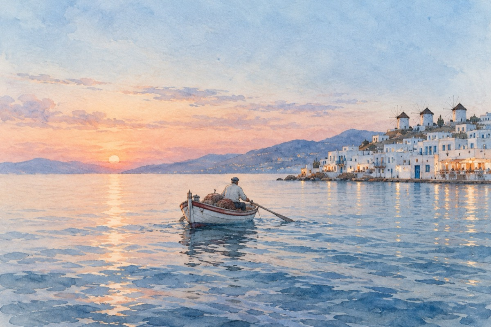

Minunea
La Mykonos.
Se-ntorc bărcile din largul mării
Pescarii vâslesc ca-n vremurile apuse
Soarele coboară în umbra înserării
Pe țărm peste tot luminile-s aprinse.
Forfota străzilor din ce în ce tot crește
Roiesc prin magazine oamenii cu priviri curioase
Tot ce-ți dorește inima, aicea se găsește
Iar gazdele primitoare ne zâmbesc bucuroase!
Dând totuși timpul la-nceput
Când în Mykonos nimic nu era
Ea, marea, încetul cu încetul totul a înfăptuit
Cu bogățiile necesare vieții ce le purta
Și cum de la primul pescar totul a început.
Și astăzi mereu marea ne cheamă
Cu valurile săltând către maluri
Și ne-adună la sânul ei ca o mamă
Mândră de ale ei fapte și-nalte idealuri.
Mykonosul cu-a lui munți, cu-a lui dealuri și văi
Ce-a răsărit din piatră seacă
Prin oamenii vremurilor, deveniți cu timpul eroi
Ce cu mintea și brațele lor au putut minunea s-o facă!
Vasile Groza